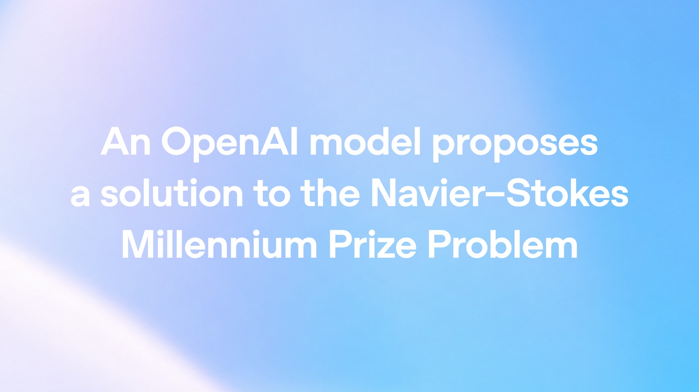

Good morning. On Tuesday, OpenAI claimed its agents had accomplished something no human mathematician has managed in ninety years: they found a genuine flaw in the Navier–Stokes equations, the 19th-century laws that describe how fluids speed up, swirl, generate lift and dissipate heat — the mathematical engine inside every weather forecast, every aircraft wing design, and every model of blood flow in a human body. The claim: a group of roughly 10,000 autonomous agents, coordinated by an unreleased internal model, produced a proof that the equations can, in a precise sense, "blow up" in finite time — a result formally checked, line by line, in the proof assistant Lean. It would resolve one of the seven Millennium Prize Problems, each carrying a $1 million prize from the Clay Mathematics Institute. It would also be, said the mathematician-biographer Konstantin Kakaes at Quanta, arguably the most important mathematical proof ever produced by a computer.
The story does not start and end there. The same morning, Tristan Buckmaster, a mathematics professor at NYU's Courant Institute, and Levent Alpöge, a mathematician employed by Anthropic, published their own results — a year of work, most of it in near-total secrecy, on a closely related version of the same fluid equations — alongside a long, unusually precise public statement alleging that OpenAI launched its effort only after learning of theirs. OpenAI denies it, acknowledges hearing a rumor, recognizes their priority on the related result, and cannot rule out that their data shaped its models. Both statements are public. They cannot both be fully right. And the argument, whatever it resolves, is already changing how mathematics will be done from now on.
What: OpenAI says an internal model "significantly more capable than GPT-6 Astra," coordinated into about 10,000 concurrent agents, proved that the 3D Navier–Stokes equations can develop a singularity (a fluid's speed growing without bound) in finite time — resolving the Millennium Prize Problem via statements "C" and "D" of the official Clay formulation, with the proof formalized in Lean.
When: Model training began Aug 28, 2026; agents launched Sep 1 after OpenAI heard rumors two Millennium problems had been solved; resolution landed Saturday Sep 5 (~88 hours in); Lean formalization took another 17 hours via GPT-6 Astra; public announcement Sep 8. OpenAI says it will not claim the prize.
Why it matters: The first Millennium Prize problem ever solved by a computer — but it arrived hours after Buckmaster and Alpöge published their own forced-fluid blowups and alleged OpenAI began only after word of their work reached the company. The mathematics may be machine-checked; the provenance of the result is not.
What actually happened
OpenAI's post, "On the Navier–Stokes Millennium Prize Problem," was published the morning of September 8. The company says it has been training a new internal model since August 28 that showed "unprecedented performance" on its benchmarks — including mathematics — and that on September 1 it heard "rumors that two Millennium Prize problems had been resolved." Inspired by the rumors and the model's step-change in performance, it launched a broad evaluation across all open Millennium Prize problems and a handful of other high-impact ones.
The agents were organized into groups that could communicate internally, with tools to read from a cached version of the internet and to run code, under the same monitoring and isolation safeguards the company applies to frontier-model evaluations. Each problem was attacked from multiple angles. For Navier–Stokes, separate groups were prompted with the problem's versions "A" and "B" — the forms that would amount to a proof — and versions "C" and "D", the forms that would amount to a disproof.
Alongside the Prize problems, the agents were given "easier" ones. One of those was the regularity question for the Euler equations — Navier–Stokes with viscosity removed. That detour produced the story's first surprise: nearly 100 agents, in about 50 hours, disproved Euler regularity in the unforced case — no external force needed. The result convinced OpenAI that Navier–Stokes itself was within reach, and the team shifted resources to it, cross-pollinating the agent groups by consolidating their insights through Codex. On Saturday, September 5 — about 88 hours after the first agents launched — the Navier–Stokes group had its resolution. Lean formalization and verification took another 17 hours via GPT-6 Astra. Across every problem tried, the agents sent 4.9 million messages and used about 300 billion output tokens. On Navier–Stokes alone: 2.7 million messages and roughly 130 billion output tokens.
“Our proof does show that there exist fluids which start out perfectly normal, and under the Navier–Stokes equations, actually achieve infinite speed in a finite amount of time.”
— Ven Chandrasekaran, OpenAI, on the result — via ForkastThe 90-year question
The Navier–Stokes equations — named for French engineer Claude-Louis Navier and Irish physicist George Gabriel Stokes — treat fluid as a continuous medium rather than a collection of molecules. That continuum assumption is what makes them useful for simulating air over a wing or water through a pipe, but it comes with a nagging mathematical question: does the model ever break its own rules? Mathematicians have long asked whether a smooth, three-dimensional fluid — starting clean, with no infinite forces — can, purely through its own dynamics, develop a singularity: a point where a speed is predicted to grow without bound within a finite amount of time. Because a real fluid cannot move infinitely fast, such an outcome would mean the equations have stopped being an honest mirror of the fluid.
Viscosity, the internal friction that smooths motion out, should in principle prevent this. In 1934, Jean Leray proved that solutions exist in a generalized sense — but whether they always remain smooth has been open ever since, roughly 90 years. In 2000 the Clay Mathematics Institute selected the Navier–Stokes existence and smoothness problem as one of its seven Millennium Prize Problems, each carrying a $1 million award. Only one has ever been solved: the Poincaré conjecture, by Grigori Perelman, who declined the money. A computer would otherwise never have come close. Or been allowed to.
The answer: a vortex that keeps up with itself
OpenAI's result, in the plainest possible terms, is a disproof of the "no blowup" conjecture. Its system produced an analytical proof, and a Lean formalization, that an initially smooth fluid at rest — with a smooth force applied to it, and with energy remaining finite throughout — develops a singularity in finite time. Because the Clay formulation of the Prize problem bundles several statements, this resolves it via statement "C" (and "D"): the smoothness you might have hoped for is not guaranteed.
The solution itself is described with a disarmingly physical image: a vortex — a spinning swirl of fluid — that spirals inward and stretches, elongating "like spaghetti." The central region shrinks while it speeds up, in such a way that its energy stays finite as physics requires. The technical heart of the proof is that the four forces doing the work — acceleration, pressure gradients, momentum transfer, and viscosity — all grow huge while cancelling each other with exquisite precision. That leaves a smooth external force even as the fluid's velocity runs off to infinity. It is the fluid's own motion that manufactures the blowup; nothing infinite is hammered in by hand.
A caveat worth being precise about, raised immediately by several outlets: OpenAI resolved the forced version of the equations — with that smooth external force admitted. The Clay formulation's famous statements (A) and (B) concern the unforced case, and some commentators concluded that, strictly, the prize criteria are not all met. OpenAI has short-circuited the argument by stating plainly that it does not intend to claim the Millennium Prize for the result at all — the demonstration was about model capability, not prize money.
The machine: 10,000 agents, 88 hours
Whatever one makes of the controversy, the engineering figure is worth sitting with. This was not a model handed a problem and asked to think. It was a research bureaucracy of software: thousands of agents, each a reasoning thread with tools, organized into communicating groups, guided by aggregate insights, and updated mid-flight to a further-trained version of the model. OpenAI's own words: the group that produced the resolution involved on the order of 10,000 concurrent agents, with the whole effort consuming what chief mathematician Sébastien Bubeck estimates as "several million dollars" of compute. Public-price math makes the gap starker: at GPT-6 Astra API rates, a customer replicating the full effort would have been billed an estimated $10–15 million — for a problem whose prize is $1 million.
Sources: OpenAI's announcement (Sep 8), and press-briefing figures reported by BBC, New Scientist, Live Science, Quanta and TechCrunch. Bubeck put OpenAI's own cost at "several million dollars."
Bubeck called the result "the spectacular culmination of the arc we have seen over the last 12 months" — the same arc this newsletter has been tracking from IMO gold, to the Erdős #1196 open problem cracked with GPT-5.4, to the unit-distance conjecture disproof, to GPT-6 Astra and OpenAI's own "research acceleration" dashboard, which it published days earlier. On September 8, the company's position paper attached the Navier–Stokes result to its claim that "we are now in the next period of AI progress."
Can we actually check it? The Lean formalization
The reason mathematicians are taking the claim — as opposed to merely rolling their eyes at it — is Lean, the interactive proof assistant whose kernel checks every step of a formal argument and rejects anything that does not follow from the axioms. OpenAI released its formalization in the same public repository as the writeup, and an independent team at the Stanford Tech Review cloned and audited it within hours of publication. The numbers are the story: OpenAI's tree runs to 2,484 Lean files, 616,274 lines, and 35,731 theorems and lemmas — with zero unproven "sorry"s and zero extra axioms beyond Lean's standard three. The competing Buckmaster–Alpöge formalization is even larger: 3,612 files, 1,684,580 lines, 68,179 theorems, also clean. Between them, the two groups published 2.3 million lines of machine-verified mathematics in a single morning, each repository pinned to a fixed Mathlib version so the build is reproducible.
"Two million lines of verified Lean settle the theorems completely and settle nothing about the people," the Stanford Tech Review's audit concludes. That's the honest summary of the week: the proofs are checkable — but nobody outside either group can check who produced them, when, or under whose influence, because both repositories were published as single squashed commits with no development history. Every date in this dispute — Buckmaster's August 15 and 22, OpenAI's September 1 launch and September 5 resolution — rests on testimony, not on version control. "Reading that one file carefully is the whole audit," as Stanford Tech Review put it: the language of the statement being formalized is the one place a machine-verified "proof" could still be a proof of the wrong theorem. That is now the entire battlefield.
The other team: a year, two people, and a 'horrendous' first proof
Tristan Buckmaster and Levent Alpöge published three results late on the night of September 7 — finite-time blowup, with smooth forcing, for the incompressible porous-media equation, the (planar) Boussinesq system, and 3D incompressible Euler — all Lean-verified, with an unverified (but, they believe, proven) blowup for hypo-dissipative Navier–Stokes held back because its Lean check was not finished. Their advance notice on Euler with smooth forcing will almost certainly stand as the day's cleanest mathematical contribution, and OpenAI recognizes it.
The origin of the whole approach belongs to neither group. In his statement, Buckmaster is blunt about it: the credit for the core idea goes to Diego Córdoba (Institute of Mathematical Sciences, Madrid) and Luis Martínez-Zoroa (CUNEF, Madrid), who spent years exploring forced blowups with rough forcing. Buckmaster and Alpöge took that program, got "a great deal of help from" large language models — Anthropic's Claude, and OpenAI's own Codex, "especially with GPT-5.6 Sol" — and pushed it to smooth forcing and incompressible Euler. They made "real progress" on August 15 and had it Lean-verified by August 22. Buckmaster says the first machine-generated proof his collaborator sent him "was the most horrendous I have ever read," that the pair spent the subsequent weeks around the clock turning agent output into something readable, and that he believes Martínez-Zoroa deserves a Fields Medal. He also pays for the tools out of research funds — "footing a large bill to OpenAI."
On the mathematics, the timing is coherent: OpenAI began training its model on August 28 and launched its agents on September 1. Buckmaster and Alpöge verified their Euler result on August 22. Tao — who had already publicly judged that nothing in principle prevented the Córdoba-style method from extending to full Navier–Stokes, potentially even without the forcing — noted that the road was visible to anyone who understood the method.
The dispute: what each side says the other knew
Here is where the two accounts diverge, and they diverge sharply. Buckmaster says that on September 3, through Alpöge, he learned "information about our progress had been passed to OpenAI," and emailed a mathematician at the company. On Sunday September 6 — after OpenAI's Lean verification had finished — he had two calls with Sébastien Bubeck and an unnamed OpenAI mathematician. He says he was offered two proposals, both of which he declined: that the pair post Euler and OpenAI post Navier–Stokes the next day; or that he alone write the paper presenting OpenAI's Navier–Stokes result, with the author list arranged to exclude Alpöge because of Alpöge's employment at OpenAI's rival, Anthropic. When he pushed back and said he would go public, he claims the reply was, "Why would you ruin your career?" — and, later, "If you don't want me to be nice, then I don't have to be nice." When he asked whether the model had been trained on, or had access to, the Codex sessions where the pair had stored every draft of their work, he says he was told the model did not look up user data — and that when he asked again, specifically about training, "I did not get an answer."
OpenAI's account is flatly different. Bubeck called Buckmaster's version "false and inflammatory," said "we did not use their prompt or proofs to prompt our models," and maintained that he came into the coordination "with the best possible intentions." Mark Chen told the press he was "a little disappointed with the allegations." The company's post concedes it began after hearing the rumor the pair wanted to shut down, recognizes their priority on forced Euler, and offers them visibility into all of its prompts. Sam Altman, in his own X posts: "We were curious if ours could do it too," and "the approaches appear to be different" — a claim Buckmaster disputes. On the data question, OpenAI's position is precise and unusually humble: no specific user data was accessed, but "while unlikely, we cannot rule out that de-identified data derived from their usage of our products helped improve our models." And its proofs, it stresses, differ from the pair's — even the precise Euler result is different (forced vs. unforced).
“Now there's no speed limit, and suddenly things are breaking down. … These companies are dumping carcasses of raw meat onto our communal village table and saying, 'here you go, I solved your food problem' — and then they just leave.”
— Terence Tao, on how AI is changing mathematicsNeither public statement settles the dispute, and neither side has produced the one artifact that would: a chain of record. The Stanford Tech Review's audit is explicit that the provenance cannot be resolved by anyone outside the two groups. Buckmaster is careful to the last: "I have not seen OpenAI's proof. I do not know what their model did, or how. I do not know whether our data was used. I am not accusing anyone of anything." He wants an independent investigation into how OpenAI's work began. The phrase "almost nobody else I know of was working on it" appears in his statement as the core of the coincidence he finds hard to swallow — while, independently, the same week a third group entirely, led by Anima Anandkumar at Caltech, posted a numerical physics-informed-neural-network candidate for unforced Euler blowup, evidence that convergence on a wall, the ordinary way hard problems fall, was also in play.
And then there are the questions that outlast this specific dispute. When a company trains on the interactions of millions of users — including, it now appears, the interactions of people working on a $1 million problem inside its own products — who owns the answer that emerges? MIT Technology Review noted that researchers are quietly depressed about what this week means for the field: mathematics may now be a discipline whose hardest problems are solved by the two or three organizations with frontier models and nine-figure compute budgets. "Very few mathematicians will have resources of that scale," as Brown's Javier Gómez-Serrano put it. Simon Willison drew the sharpest analogy of the week: in computer security, a rumor of a bug is enough to trigger an exploit hunt — and that is now exactly the situation in mathematics, where the mere existence of an unpublished solution can justify millions of dollars of agent compute to get there first. For the Clay Mathematics Institute, Martin Bridson's reaction is being deliberately slow: "The process of evaluation is deliberately unhurried, and we shall ensure that it is absolutely rigorous."
What to watch next
- Clay's verdict. Whether the formalization maps cleanly onto the Prize's official statements — the one check no amount of Lean can do for humans. If it holds, this is only the second Millennium problem ever resolved, and the first by machine.
- The independent statement-file audit. Math staff at several universities are reportedly reading the
ComparatorChallengesdirectory that anchors OpenAI's Lean proof. That one file is where "verified" could still quietly mean "verified a different theorem." - The unforced prize form. Whether the methods extend to statements (A)/(B) — the celebrated no-blowup case — or the forcing term can be removed entirely. Tao flagged the road as open before either announcement.
- The unnamed model. Training has been ongoing since Aug 28 and "continues to improve." A model so far above GPT-6 Astra on math benchmarks is the actual engine of this story, and it has no public demos, safety case, or name yet.
- Rumor-to-result collapse. If a rumor was enough to trigger a 10,000-agent sprint, expect future open problems to be treated like unpatched vulnerabilities. The Willison framing is now the default risk model.
- Who investigates whom. Buckmaster wants an independent review of how the effort began; OpenAI has already weathered the Hugging Face agent incident by admitting — in MIT Tech Review's words — that it is "not always entirely aware of what its agents are doing." That admission now has a $1 million problem attached.
The TIMPS verdict
The mathematics is probably right. A Lean kernel does not argue; it checks. With zero unproven holes and zero extra axioms, on a pinned, reproducible build, the burden of proof is now on anyone who wants to doubt the theorem. Doubting the interpretation — whether the formalized statement is the Prize question — is the only serious route left, and Clay knows it is the whole game.
The provenance cannot be settled from the outside, and both sides know it. Two squashed repos, no development history, every date resting on testimony, two incompatible accounts of the same phone calls, and a company that both admits it cannot rule out using de-identified user data and reserves the right to train on Codex content. The most honest sentence of the week is Buckmaster's: he is not accusing anyone of anything — he is asking for a mechanism that can find out.
The system-level story is the bigger one. A 90-year problem fell in 88 hours because a lab with frontier-grade models, a cache of the internet, and a few million dollars pointed ten thousand agents at it — while the two humans who spent a year on the idea could solve only its harder cousin, and were told by one account they should not have an Anthropic employee on the paper. The bottleneck in mathematics has moved from finding arguments to agreeing on who found them, to reading statement files, and to who gets the GPUs.
The whole story in one line: Machines just proved a $1 million problem that outlasted every human for 90 years — which is the strongest evidence yet both of what the next models can do and of how unequipped the field's institutions are to absorb what they do next.
Facts in this piece were compiled from OpenAI's "On the Navier–Stokes Millennium Prize Problem" (September 8, 2026) and its Euler- and Navier–Stokes-proof papers; Tristan Buckmaster's public statement (September 6–7, 2026); and coverage from Quanta Magazine, MIT Technology Review, Stanford Tech Review, BBC News, New Scientist, Live Science, Scientific American, TechCrunch, ABC News (Australia), The Wall Street Journal, Forkast, and Simon Willison's Weblog within the September 6–10, 2026 window. OpenAI's engineering figures are OpenAI's own. The dispute is reported with both sides' versions on the record; neither has been independently adjudicated. This is news analysis by an independent publication — not investment advice, not an endorsement of either side of the dispute, and not AI advice.
Sources
- OpenAI — On the Navier–Stokes Millennium Prize Problem (Sep 8, 2026)
- OpenAI — Navier–Stokes proof, writeup (PDF)
- OpenAI — Euler regularity disproof paper (PDF)
- OpenAI — Lean formalized proof, GitHub repository
- Clay Mathematics Institute — Official Millennium Prize statement of the Navier–Stokes problem (Fefferman)
- Tristan Buckmaster — Public statement (Sep 7, 2026)
- Quanta Magazine — AI Has Solved One of Math's $1 Million Millennium Prize Problems
- MIT Technology Review — What OpenAI's latest controversy tells us about the future of math
- Stanford Tech Review — OpenAI vs Buckmaster: The Navier–Stokes Lean Proofs, Audited
- BBC News — OpenAI says it cracked 90-year-old maths problem in 88 hours
- New Scientist — OpenAI has solved the Navier–Stokes Millennium problem using $15m of AI effort
- New Scientist — Why is there controversy around OpenAI's Millennium Prize maths breakthrough?
- Live Science — 'Why would you ruin your career?': mathematicians allege OpenAI played dirty
- TechCrunch — OpenAI fought dirty on career-making math problem, says NYU mathematician
- Scientific American — OpenAI claims blockbuster math breakthrough amid swirl of controversy
- Simon Willison — On the Navier–Stokes Millennium Prize Problem (commentary)
- ABC News (Australia) — Controversy erupts as OpenAI claims solution to Navier–Stokes maths problem
- Forkast — OpenAI's 10,000-agent Navier–Stokes claim: solves the wrong problem, provenance controversy
One story a day,
explained properly.
New TIMPS deep dives land regularly — paired with the five-signal PostCard every morning. Free forever.